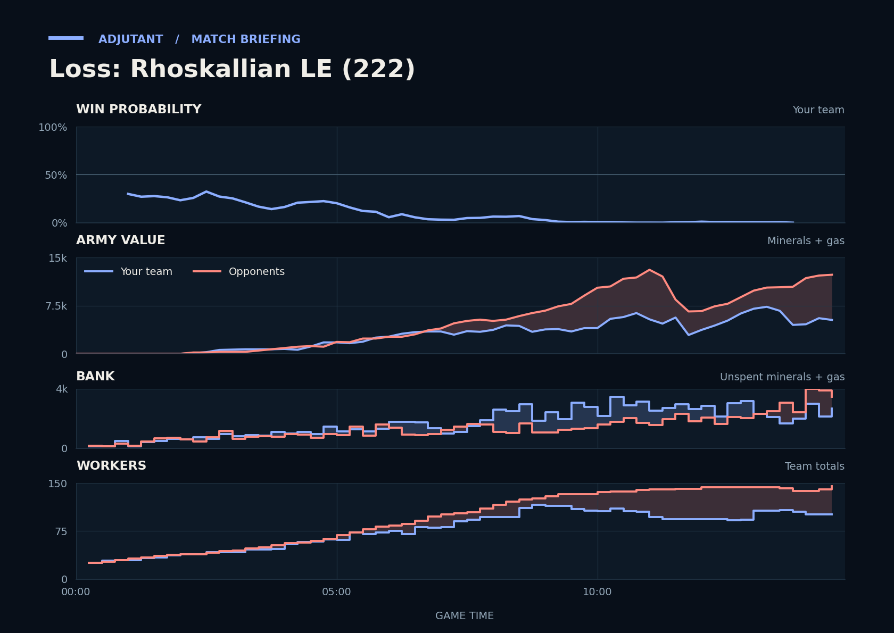

Loss: Rhoskallian LE (222)
Provisional debrief. The full report (timeline, insights and analysis) is being generated.

**Loss.** Scallop's natural was overrun in the last fight because TraderJoe's larger economy and production left Scallop 2.8x behind going in.
**Why**
- 8:23–9:41: You went in 1.3x behind TraderJoe; Scallop's SCVs and Orbital Command also died, leaving TraderJoe ahead.
- 13:09: Unseen by you, TraderJoe had 42 more workers, and had made about twice Scallop's army by then.
- 13:10–14:25: Scallop lost less army than TraderJoe, but also lost 14 SCVs and an Orbital Command there.